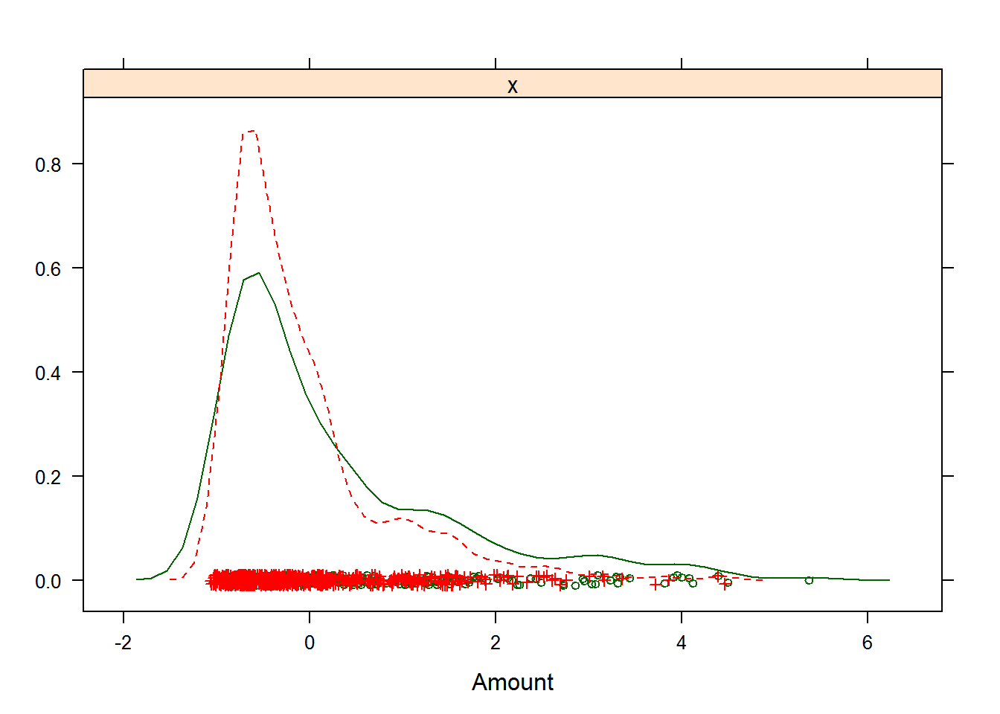

3.3 Предварительная обработка: преобразование и групповая трансформация переменных
Необходимость преобразования исходных значений предикторов может быть вызвана разными причинами. Например, некоторые статистические методы требуют, чтобы все предикторы измерялись в одинаковых единицах. В других случаях качество модели может в значительной мере зависеть от характера распределения данных или наличия выбросов. Большинство наиболее распространенных способов преобразования количественных предикторов может быть реализовано функцией preProcess() из пакета caret. Ее основными аргументами являются следующие:
preProcess(x, method = c("center", "scale"), na.remove = TRUE, verbose = FALSE),
x- таблица или матрица с исходными данными (все переменные должны быть количественными);method- список с названиями методов трансформации;verbose- флаг для указания необходимости выводить протокол обработки.
Методы предобработки можно условно разделить на три группы: * преобразование отдельных предикторов: "center", "scale", "range", "expoTrans", "BoxCox", "YeoJohnson"; * групповая трансформация подмножества переменных: "spatialSign", "pca" и "ica"; * заполнение пропущенных значений: "knnImpute", "bagImpute", "medianImpute".
Для приведения всех переменных к одинаковым единицам измерения служит стандартизация, являющаяся самой распространенной операцией предобработки (и потому задается в preProcess() по умолчанию). Она заключается в вычитании из исходного значения \(x_i\) некоторой переменной \(X\) соответствующего среднего значения (“центрирование”, или "center") и последующего деления полученной разницы на стандартное отклонение этой переменной σx (“нормализация”, или "scale"): \[x'_i = \frac{(x_i - \bar{x})}{\sigma_x}.\]
В результате стандартизации все количественные переменные будут иметь среднее значение, равное 0, и стандартное отклонение, равное 1.
Например, в таблице GermanCredit содержатся переменные, измеренные в разных шкалах: размер кредита Amount измеряется в немецких марках, возраст клиента Age - в годах, и т.д. Как следствие, размах значений переменных также существенно разнится: индикаторные переменные по определению варьируют от 0 до 1, тогда как размер кредита изменяется от 250 до 18424 марок. Выполним стандартизацию трех метрических переменных:
data(GermanCredit, package = "caret")
TransPred <- c("Duration", "Amount", "Age")
preVar <- preProcess(GermanCredit[, TransPred])
TransVar = predict(preVar, GermanCredit[, TransPred])
print("До преобразования:")## [1] "До преобразования:"summary(GermanCredit[, TransPred]) ## Duration Amount Age
## Min. : 4.0 Min. : 250 Min. :19.00
## 1st Qu.:12.0 1st Qu.: 1366 1st Qu.:27.00
## Median :18.0 Median : 2320 Median :33.00
## Mean :20.9 Mean : 3271 Mean :35.55
## 3rd Qu.:24.0 3rd Qu.: 3972 3rd Qu.:42.00
## Max. :72.0 Max. :18424 Max. :75.00print("После преобразования:")## [1] "После преобразования:"summary(TransVar) ## Duration Amount Age
## Min. :-1.4017 Min. :-1.0703 Min. :-1.4545
## 1st Qu.:-0.7383 1st Qu.:-0.6751 1st Qu.:-0.7513
## Median :-0.2407 Median :-0.3372 Median :-0.2238
## Mean : 0.0000 Mean : 0.0000 Mean : 0.0000
## 3rd Qu.: 0.2568 3rd Qu.: 0.2483 3rd Qu.: 0.5674
## Max. : 4.2373 Max. : 5.3681 Max. : 3.4683# при необходимости, обновление переменных
GermanCredit[, TransPred] <- TransVarОпция method функции preProcess() может принимать и другие значения. В частности, значение "range" приводит значения переменных к диапазону [0, 1], а "expoTrans" выполняет вычисление экспоненциальной функции.
Некоторые из переменных имеют также явно выраженные асимметричные распределения (например, Amount и Age), что может представлять проблему для классических статистических методов. Часто решить эту проблему позволяют такие простые преобразования исходных значений, как извлечение квадратного корня, логарифмирование или расчет обратных значений. Если истинное нормализующее преобразование неизвестно, лучшим считается преобразование Бокса-Кокса (Box-Cox transformation - Box, Cox, 1964), которое позволяет найти оптимальное решение, в первую очередь, для нормализации дисперсии.
Универсальное семейство преобразований Бокса-Кокса (БК) случайной величины x зависит от значения параметра \(\lambda\):
- при \(\lambda \neq 0\) мы имеем дело со степенным преобразованием вида \(y(\lambda) = \frac{x^{\lambda} -1 }{\lambda}\), где показатель степени может принимать любые положительные или отрицательные значения;
- в частных случаях после подстановки параметра \(\lambda\) в основную формулу будем иметь: \(y = 1/x\) при \(\lambda = -1\); \(y = 1/\sqrt{x}\) при \(\lambda = -0.5\); \(y = \sqrt{x}\) при \(\lambda = 0.5\); \(y = x^2\) при \(\lambda = 2\) и т.д.;
- при = 0 используется логарифмическое преобразование \(y(\lambda) = \log x\) (поскольку деление на нуль приводит к неопределенности).
Таким образом, большинство “простых формул” представляют собой лишь частный случай преобразования БК. Применим к метрическим показателям таблицы БК-преобразование
(preBox <- preProcess(GermanCredit[, TransPred], method = "BoxCox"))## Created from 1000 samples and 0 variables
##
## Pre-processing:
## - ignored (0)Для предиктора Amount мы получили расчетное значение \(\lambda = -0.1\). Результат преобразования с этим параметром представим графически (рис. 3.1):
BoxVar <- predict(preBox,GermanCredit[, TransPred])
y <- factor(GermanCredit$Class)
trellis.par.set(theme = col.whitebg(), warn = FALSE)
featurePlot(GermanCredit$Amount, y, "density", labels = c("Amount", ""))
featurePlot(BoxVar[, 2], y, "density", labels = c("Box-Amount", ""))Рисунок 3.1: Результат преобразования Бокса-Кокса для размера кредита в немецком банке
При значении параметра method="YeoJohnson" выполняется трансформация Йео-Джонсона (Yeo-Johnson), которое весьма похожа на БК-преобразование, но учитывает в расчетах нулевые и отрицательные значения обрабатываемых переменных. Другой функцией, также позволяющей оценить оптимальное значение \(\lambda\) для набора исходных данных, является функция BoxCoxTrans() из пакета caret.
В ряде случаев возникает необходимость одновременного преобразования целой группы предикторов или сразу всех предикторов, входящих в тот или иной набор данных. Как правило, такая необходимость возникает при наличии многомерных выбросов, а также когда исследователь желает снизить размерность исходной задачи, например, за счет удаления некоторого количества высоко коррелирующих предикторов.
Если ожидается, что тот или иной метод построения предсказательной модели чувствителен к наличию многомерных выбросов, исходные данные можно преобразовать при помощи метода пространственных признаков (spatial sign - Serneels et al., 2006). С математической точки зрения, этот метод проецирует значения предикторов на поверхность многомерной сферы, в результате чего отдельные наблюдения становятся нормированными: \(X_{ij}' = X_{ij} / \sum_{i=1}^m X_{ij}^2\), где \(m\) - это число преобразуемых предикторов.
Поскольку знаменатель выражает квадрат расстояния до центра распределения предикторов, перед применением этого метода важно выполнить стандартизацию всех предикторов:
preProcess(х, method = c("center", "scale", "spatialSign")),
чем будет достигнут примерно одинаковый их вклад в величину квадрата расстояния. Кроме того, важно уточнить, что поскольку это преобразование применяется одновременно к группе предикторов, то последующее изменение их состава может исказить смысл проведенной трансформации.
Как было показано в разделе 2.4, одним из наиболее популярных методов снижения размерности исходного набора данных является анализ главных компонент PCA (principle components analysis). Этот метод позволяет сформировать ортогональную систему координат, обеспечивающую оптимальное расположение точек объектов относительно осей главных компонент нового редуцированного пространства. Пересчет из исходной системы координат в p-мерное (\(m > p\)) пространство главных компонент осуществляется с использованием линейных ортогональных преобразований переменных \(X_i\): \(T_k = \sum_{i=1}^m P_{ik}(X_i - \mu_i)\), где \(P_{ik}\) - нагрузки (компоненты собственного вектора, соответствующего \(k\)-му собственному значению), \(k = 1, 2, \dots, p\). Основной критерий качества такого преобразования – достаточно высокая доля общей вариации исходных данных, объясняемая p первыми собственными значениями (например, 80% или 95%).
Для реализации PCA-процедуры с помощью preProcess() необходимо определить параметр thresh - кумулятивную долю дисперсии исходных данных, которая должна содержаться в главных компонентах (по умолчанию thresh = 0.95) или pcaComp - максимальное число главных компонент (по умолчанию этот параметр имеет значение NULL, т.е. он выключен, и оптимальное число главных компонент выбирается на основе thresh).
Построим две модели логистической регрессии на основе “очищенных” (см. раздел 3.2) данных таблицы GermanCredit и после РСА-преобразования:
y <- factor(GermanCredit$Class)
gcred <- GermanCredit[, -10]
nz <- nearZeroVar(gcred)
gcred.clean <- gcred[, -nz]
highCor <- findCorrelation(cor(gcred.clean), cutoff = 0.75)
gcred.clean <- gcred.clean[, -highCor]
linCombo <- findLinearCombos(gcred.clean)
gcred.clean <- gcred.clean[, -linCombo$remove]
dim(gcred.clean)## [1] 1000 43Определим оптимальную размерность пространства главных компонент по критерию Кайзера-Гуттмана, который рекомендует оставить только те главные компоненты, собственные значения которых превышают их среднее (рис. 3.2):
library(vegan)
mod.pca <- vegan::rda(gcred.clean, scale = TRUE)
ev <- mod.pca$CA$eig
# Иллюстрация Критерия Кайзера-Гуттмана
barplot(ev, col = "bisque", las = 2)
abline(h = mean(ev), col = "red")
legend("topright", "Среднее собственных значений", lwd = 1, col = 2, bty = "n")Рисунок 3.2: Оценка числа главных компонент по критерию Кайзера-Гуттмана
c(length(ev[ev > mean(ev)]), sum(ev[ev > mean(ev)])/sum(ev)) ## [1] 19.0000000 0.7272241Сформируем новую таблицу предикторов из 19 главных компонент, которые объясняют 72.7% общей дисперсии:
prePCA <- preProcess(gcred.clean,
method = c("center", "scale", "pca"), pcaComp = 19)
gcred.pca <- predict(prePCA, gcred.clean)Попробуем сравнить точность прогноза двух моделей логистической регрессии с использованием функции train(), которая будет предметом нашего подробного рассмотрения ниже. Для тестирования моделей будем многократно (times = 100) случайным образом делить всю выборку на обучающую (800 объектов или 80%) и контрольную (200 объектов или 20%), для чего с помощью функции createDataPartition() создадим соответствующую “заготовку” train.index. Метод тестирования method = "LGOCV" (многократное разбиение на обучающую и контрольную выборки) и train.index определим в специальном объекте trControl. На функцию train() подадим данные для построения модели, тип модели и условия тестирования:
train.index <- createDataPartition(y, p = .8, times = 100)
trControl = trainControl(method = "LGOCV", index = train.index)
print("Модель на основе исходного набора из 43 предикторов")## [1] "Модель на основе исходного набора из 43 предикторов"(modSource <- train(gcred.clean, y, "glm",
family = binomial, trControl = trControl))## Generalized Linear Model
##
## 1000 samples
## 43 predictor
## 2 classes: 'Bad', 'Good'
##
## No pre-processing
## Resampling: Repeated Train/Test Splits Estimated (100 reps, 75%)
## Summary of sample sizes: 800, 800, 800, 800, 800, 800, ...
## Resampling results:
##
## Accuracy Kappa
## 0.75225 0.3723319
##
## print("Модель на основе 19 главных компонент")## [1] "Модель на основе 19 главных компонент"(modPCA <- train(gcred.pca, y, "glm",
family = binomial, trControl = trControl))## Generalized Linear Model
##
## 1000 samples
## 19 predictor
## 2 classes: 'Bad', 'Good'
##
## No pre-processing
## Resampling: Repeated Train/Test Splits Estimated (100 reps, 75%)
## Summary of sample sizes: 800, 800, 800, 800, 800, 800, ...
## Resampling results:
##
## Accuracy Kappa
## 0.7554 0.3782201
##
## Нельзя сказать, что преобразовав переменные, мы получили более точную модель, но зато обошлись значительно меньшим числом переменных.
При значении параметра method = "ica" функции preProcess() используется другой метод снижения размерности пространства переменных – анализ независимых компонент ICA (Independent Component Analysis), который выполняет ту же задачу, что и РСА, однако основан на несколько иных математических концепциях и процедурах. В частности, цель ICA состоит в нахождении таких новых компонент (нового пространства латентных переменных), которые взаимно независимы в полном статистическом смысле.
Заметим в заключение, что общим недостатком любых преобразований является потеря возможности количественно интерпретировать роль отдельных предикторов, поскольку они больше не будут выражаться в исходных единицах измерения. Это, разумеется, не является большой проблемой, если модель разрабатывается исключительно для прогнозирования и не предназначена для объяснения влияния тех или иных переменных на прогнозируемый отклик. Однако важной составляющей моделирования является оценка вклада, или “важности”, каждого предиктора при получении предсказаний на основе той или иной модели.
Эти количественные показатели важности переменных могут быть рассчитаны функцией varImp(). Смысл оценивающих метрик варьирует в зависимости от конкретного алгоритма: например, для моделей классификации можно использовать площадь под ROC-кривой (см. раздел 2.3) и оценивать этот показатель путем добавления или исключения каждого предиктора модели (рис. 3.3):
plot(varImp(modSource, scale = FALSE))Рисунок 3.3: Важность отдельных показателей клиентов банка для оценки их кредитоспособности
Разумеется, если мы будем в этом же ключе анализировать модель на основе главных компонент, то столкнемся с системой трудно интерпретируемых показателей.